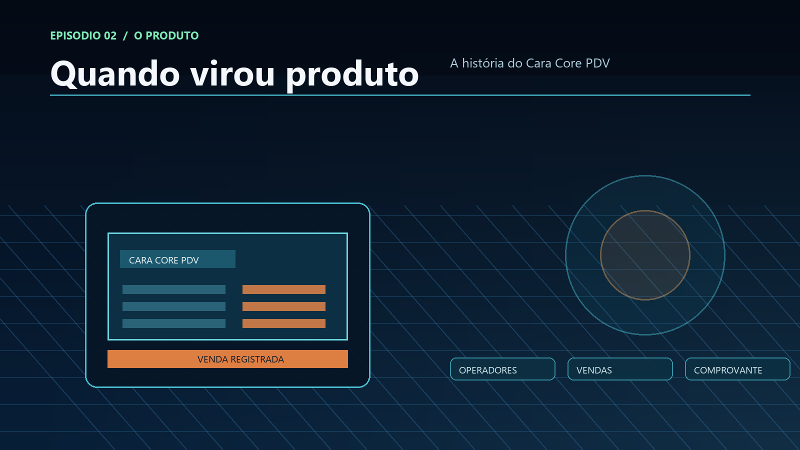

Quando a Bagagem Virou Produto: A História do Cara Core PDV
Do login ao troco, do estoque ao botão,
a ideia saiu da planilha e entrou no balcão.
Loja, operador, vendedor e comprovante no papel,
o produto ganhou vida quando o fluxo passou a funcionar.
Não é promessa vazia, nem sonho de editor,
é operação real, com identidade, sem perder o chão.
Um produto pode contar sua própria história
O vídeo histórico do Cara Core PDV mostra uma versão funcional do produto em operação: autenticação, pesquisa de operadores, vendas, estoque, cadastros, lojas, vendedores e emissão de um comprovante. Não é preciso transformar essa demonstração em uma promessa maior do que ela é. O valor está justamente em reconhecer o que já existia: um produto com fluxo, identidade e intenção operacional.
Uma tela de login conta uma história de acesso. Uma lista de operadores conta uma história de responsabilidade. Uma venda com desconto, pagamento e troco conta uma história de processo. O sistema começa a ganhar vida quando as telas deixam de ser ilustrações e passam a representar decisões reais. Essa evidência é importante porque documenta um produto funcional em operação, sem tentar afirmar que todas as capacidades atuais já estavam presentes naquela versão histórica.
Da regra isolada ao fluxo completo
A experiência anterior com auditoria fiscal ensinou a observar a operação por partes. O PDV exige o movimento contrário: reunir essas partes em um fluxo que faça sentido para quem está no balcão.
- Quem pode operar o sistema?
- Qual loja e qual vendedor estão envolvidos?
- Quais produtos foram vendidos?
- Qual foi o preço, o desconto e o valor final?
- Como o pagamento e o troco foram registrados?
- Qual comprovante pode ser consultado depois?
O produto nasce quando essas perguntas deixam de estar espalhadas em procedimentos manuais e passam a formar uma experiência coerente.
História não é nostalgia
Guardar a história do PDV não significa congelar sua primeira versão. Significa reconhecer decisões, limites e aprendizados que ajudam a escolher o próximo passo. A versão demonstrada no vídeo é um marco de origem; as versões seguintes podem melhorar arquitetura, segurança, usabilidade, sincronização e conformidade sem apagar o caminho percorrido.
O próximo episódio
No capítulo final, a história chega à arquitetura futura: como Java e Rust podem participar de uma plataforma de PDV local, resiliente e preparada para evoluir junto com as regras do varejo.
Fecho do episódio
O vídeo histórico não é uma promessa universal; é a prova de que o produto já havia assumido identidade operacional. Ali, a experiência de automação fiscal, a disciplina do fluxo e a intenção de uso real se encontraram em uma primeira forma útil de caixa.
Hashtags
Contato
- Site institucional: www.caracore.com.br
- Ecossistema: www.caracore.com.br/ecosistema.html#roadmap
- E-mail: suporte@caracore.com.br
- LinkedIn: Cara Core Informática
Um sistema bom não é apenas uma promessa — é uma sequência de decisões que se tornam visíveis na prática.
Artigo publicado em 28 de junho de 2027
© 2027 Cara Core Informática. Todos os direitos reservados.